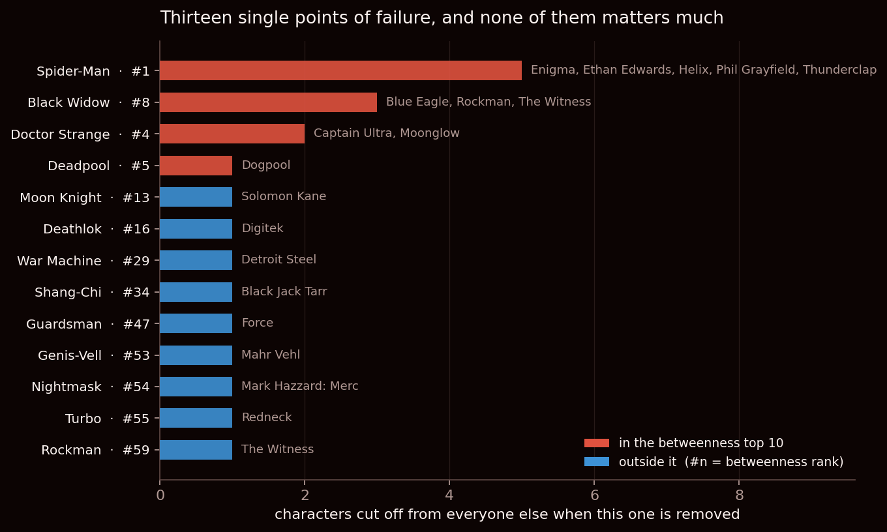
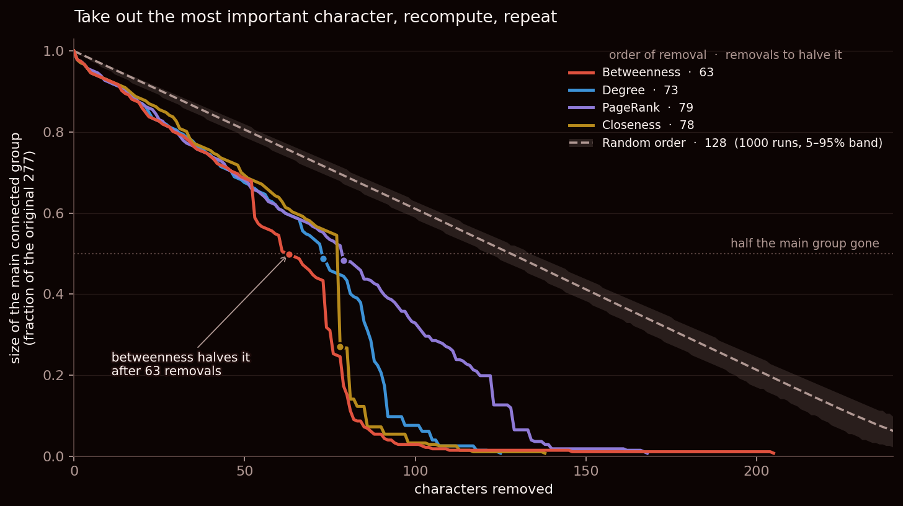
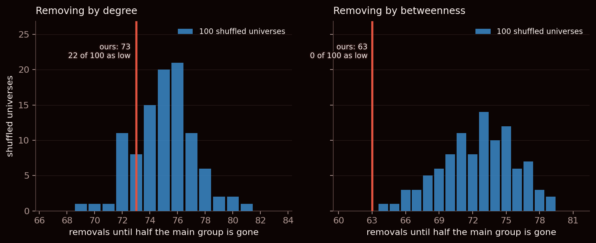
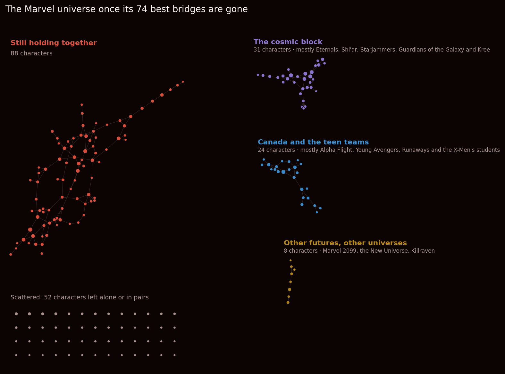

What we asked
Same map as the last two weeks: 303 Marvel characters with a Wikipedia article, and a line between two of them whenever one article links to the other. Leave out the loners and the one sealed-off island we met in week 1, and what remains is one big connected mass of 277 characters and 1,421 links. Everyone in it can reach everyone else by hopping along links.
Everybody already knows who is popular on that map. Spider-Man is linked to by more than a third of it. This week's question is different, and blunter: which characters is the map actually relying on? Who would you have to take away before the Marvel universe stopped being one universe?
Popular and load-bearing are not the same thing. A character with a hundred connections might sit in the middle of a crowd where everyone also knows everyone else — remove them and nobody notices. A character with a handful of connections might be the only way from one corner of the universe to another.
Four ways to be important
Network science has several standard ways of scoring how important someone is, and each one answers a different question. We used four:
- Degree — how many other characters you are linked with. Pure popularity.
- Betweenness — how often you sit on the shortest route between two other characters. This is the bridge score: high if lots of journeys across the universe have to pass through you.
- Closeness — how few hops you are from everyone else, on average. High if you are near the middle of the map.
- PageRank — the idea Google was built on: you matter if the characters linking to you matter. This is the one score that uses the direction of the links.
What we did
- One at a time. Removed each character on their own and checked whether anyone else lost their last connection to the main mass.
- In sequence. For each of the four scores, removed the top-scoring character, recomputed the scores on what was left, removed the new top one, and kept going. Recomputing matters: once Spider-Man is gone, the next most important bridge is not necessarily the one that was second while he was there. We tracked how big the main connected mass was after every single removal.
- At random, for comparison: the same process with characters picked blindly, 1,000 times over.
- Compared to what. Ran the degree and betweenness attacks on 100 of last week's alternate universes — the shuffled maps where every character keeps exactly their number of links but who-links-to-whom is dealt out at random. If our universe falls apart the same way those do, the fame counts explain it. If it falls apart faster, something in the real wiring is doing it.
- Looked at where the map tears, and checked every group we name against the characters' Wikipedia pages.
No single character holds it up
Start with the simplest test. Of the 277 characters, only 13 are single points of failure — remove one of them and somebody else is cut off. Remove anyone else and the only character the universe loses is the one you removed.
And even the worst of the thirteen barely matters:

Take away Spider-Man, the biggest hub in the universe, and you lose five characters: Enigma, Ethan Edwards, Helix, Phil Grayfield and Thunderclap. If those names ring a bell, it is because they are five of the eighteen “pendants” from our week-1 post — characters connected to the universe by a single thread. In fact, across all thirteen single points of failure, exactly nineteen characters can be cut off: those same eighteen pendants, plus one more we will come back to.
Two things stand out. Second place goes to Black Widow, who is only 23rd by number of links. And six of the ten best bridges by betweenness — Hulk, Wolverine, She-Hulk, Hercules, Phoenix and U.S. Agent — cut off nobody at all. They sit on an enormous number of shortest routes, but every one of those routes has a detour.
Pulling characters out in sequence
Removing one character proves the universe has no single weak point. So we kept going.

Three things are going on in that picture.
For a long time, all four orders are the same attack. Six of the first ten characters removed are identical under degree and under betweenness — Spider-Man, Hulk, Wolverine, Doctor Strange, Deadpool, She-Hulk — and they first disagree at the seventh (degree picks Phoenix, betweenness picks Hercules). After ten removals every order still has about 93% of the universe connected: taking out Marvel's ten biggest names costs it twenty characters, the ten you removed and ten more who were hanging off them.
Any targeted order is far worse than random. Picking characters blindly, you need to remove about 128 of them before half the universe is gone. Picking by any of the four scores, you need between 63 and 79. That part is not surprising: the important characters really are more important.
Around fifty removals, betweenness pulls away. After 53 removals the betweenness attack has left 163 characters connected where the degree attack still has 183; after 74 it is 88 against 132. Betweenness halves the universe at 63 removals, degree at 73, closeness at 78 and PageRank — the one score that cares about link direction — last, at 79. Once the first few dozen stars are gone, the most popular character left is often no longer the one standing between two parts of the map, and that is where the two attacks part ways.
| Remove characters by | The question the score answers | Removals until half is gone |
|---|---|---|
| Betweenness | Who do routes across the universe pass through? | 63 |
| Degree | Who is linked with the most characters? | 73 |
| Closeness | Who is fewest hops from everyone? | 78 |
| PageRank | Who is linked to by the characters that matter? | 79 |
| Nothing (random) | — | 128.5 on average (1,000 runs) |
Compared to what?
Here is the catch we learned about last week. Of course removing the hubs breaks the universe — hubs are where the links are. Any map with Marvel's lopsided fame would fall apart the same way, even one where the links were dealt at random. So the curves in Fig. 2 are not, on their own, a finding about Marvel.
To find out whether they are, we took 100 of the alternate universes from week 2 — everyone keeps their exact number of links, but who they are linked to is shuffled — and ran the same two attacks on each of them.

Removing by popularity: nothing to see. Our universe halves after 73 removals; the shuffled ones average 75.1, and 22 of the 100 broke just as fast or faster. The Marvel universe is exactly as robust to losing its stars as a universe with the same stars and random wiring would be. Its tolerance for losing Spider-Man, Hulk and Wolverine is a fact about how many links they have, not about how Marvel is put together.
Removing by bridges: a real difference. Our universe halves after 63 removals; the shuffled ones need 72.5 on average, and not one of the hundred broke as fast as ours. The real Marvel universe has seams that a random wiring with the same fame does not have.
But “halved” is just one moment in the collapse, so we checked two others — and the answer changes in an interesting way:
| Removing by bridges, until… | Our universe | Shuffled ones | Shuffles that were as fast | Verdict |
|---|---|---|---|---|
| only 60% is left | 53 | 64.4 | none of 100 | Real |
| only 50% is left | 63 | 72.5 | none of 100 | Real |
| only 40% is left | 74 | 76.1 | 26 of 100 | No difference |
Our universe does not fall apart further than the shuffled ones. It falls apart sooner. Early on, whole groups of characters come away from it in one piece, while a shuffled universe — which has no groups, only fame — just keeps shedding characters one or two at a time. By the time either is down to 40%, the shuffles have caught up. That is exactly what a universe with a few distinct neighbourhoods, held on by a few bridges, should look like, and it is what the next section is about.
That fits with what we found in week 2. Our universe's characters cluster together far more than chance allows, and its main mass is smaller than the shuffles say it should be. A universe made of tight neighbourhoods is exactly the kind that is held together by a few bridges between them. We have not proven that the clustering is why, but the two findings point the same way.
Removing nodes adaptively in order of betweenness, the undirected giant component (n = 277) falls below half its size after 63 removals. Across 100 degree-preserving rewirings the same attack needs 72.5 (sd 3.3); none of the 100 broke as quickly, the strongest statement 100 draws allow (empirical p = 0.01, z = −2.9). The degree-ordered attack gives 73 against 75.1 (sd 2.1), with 22 of 100 rewirings as fast (p = 0.34). The betweenness effect holds at a 60% threshold (53 against 64.4, sd 3.6, none of 100) but not at 40% (74 against 76.1, sd 2.4, 26 of 100 as fast). The network is no more fragile to the loss of its hubs than its degree sequence implies; under the loss of its brokers it fragments earlier than the null, though not more completely.
Where it tears
So what exactly are those seams? We stopped the betweenness attack at its most destructive moment — after 74 removals, when the second-biggest piece is as big as it ever gets — and looked at what the universe had broken into.

Eighty-eight characters still hold together. Fifty-two are left alone or in pairs. And three real groups have broken away:
Other futures, other universes (8 characters). The cleanest seam of all, and it comes loose after 61 removals. Doom 2099, Hulk 2099 and Ravage 2099 are from Marvel 2099, the line set in the far future. Justice, Nightmask and Mark Hazzard: Merc are from the New Universe, a separate imprint Marvel ran from 1986 to 1989. Killraven fights in post-apocalyptic alternate futures, and Starr the Slayer was reintroduced in newuniversal, the New Universe's 2006 reboot. What held the New Universe characters on was mostly Star Brand — the New Universe's own flagship character, and the 56th bridge removed.
Canada and the teen teams (24 characters). The first sizeable group to go, after only 53 removals. Mostly Alpha Flight, Marvel's Canadian team (Northstar, Puck, Guardian, Vindicator, Wild Child), and the youth teams: the Young Avengers (Hulkling, Speed, Iron Lad), the Runaways (Alex Wilder, Chase Stein), and students at the X-Men's school (Anole, Rockslide, Hellion, Surge) — plus a couple of stray characters, like the Ultimate-universe versions of Wolverine and Iron Man. They were attached largely through Wolverine, Hulk and the adult X-Men.
The cosmic block (31 characters). Breaks away at the peak. Mostly the space side of Marvel: the Eternals (Ajak, Ikaris, Makkari, Thena), the Shi'ar and the Starjammers (Gladiator, Vulcan, Raza Longknife, Ch'od, Korvus), the Guardians of the Galaxy (Star-Lord, Rocket Raccoon, Bug) and the Kree (Mahr Vehl, Genis-Vell). This one is the loosest label of the three: it also swept up Black Widow's Russian circle, Jessica Jones and Gwenpool, who are here because of who they happened to be linked through, not because they are cosmic.
The 74 characters removed, in order
1. Spider-Man · 2. Hulk · 3. Wolverine · 4. Doctor Strange · 5. Deadpool · 6. She-Hulk · 7. Hercules · 8. Phoenix · 9. Cloak and Dagger · 10. Black Panther · 11. Quasar · 12. Hank Pym · 13. Scarlet Witch · 14. Black Widow · 15. Moon Knight · 16. Cable · 17. Deathlok · 18. Storm · 19. Emma Frost · 20. Cyclops · 21. Iron Fist · 22. Luke Cage · 23. Nova · 24. Rachel Summers · 25. Betsy Braddock · 26. Jean Grey · 27. Quicksilver · 28. Adam Warlock · 29. War Machine · 30. Black Bolt · 31. U.S. Agent · 32. Human Torch · 33. Venom · 34. Black Cat · 35. Ares · 36. Eddie Brock · 37. Spider-Woman (Jessica Drew) · 38. Franklin Richards · 39. Captain Marvel · 40. Mockingbird · 41. Anya Corazon · 42. Misty Knight · 43. Outlaw · 44. Noh-Varr · 45. Man-Thing · 46. Darkhawk · 47. Patsy Walker · 48. Blade · 49. Human Torch (android) · 50. Garrison Kane · 51. Abomination · 52. Phyla-Vell · 53. Leech · 54. Vance Astrovik · 55. Jericho Drumm · 56. Star Brand · 57. Captain Universe · 58. Spider-Woman (Gwen Stacy) · 59. Shang-Chi · 60. Mayday Parker · 61. Ghost Rider · 62. Spider-Girl · 63. Elsa Bloodstone · 64. Moondragon · 65. Ghost Rider (Danny Ketch) · 66. Jeffrey Mace · 67. Rom the Space Knight · 68. Blue Diamond · 69. Frankenstein's Monster · 70. Frog-Man · 71. Spider-Woman · 72. Ms. Marvel · 73. John Jameson · 74. Sabra
Week 1 found one island that was already completely cut off from the Marvel universe: the nine characters of Strikeforce: Morituri, a series that ran in its own continuity. This week's clean seam is the same story, one layer deeper. Marvel 2099 and the New Universe were separate lines too; they just happened to keep a few threads to the main universe, and those threads are exactly what a bridge-hunting attack finds.
What surprised us: a corner of the universe held on by a disclaimer
Go back to Fig. 1 and look at Black Widow, second only to Spider-Man. Remove her and three characters fall off: Blue Eagle, Rockman and The Witness. Those are the nineteenth character we promised — Rockman is not a week-1 pendant, because he has two links — and the reason they hang off Black Widow of all people is worth reading.
Rockman is a hero from 1941, from the Golden Age comics of Marvel's predecessor Timely, and The Witness is another Timely hero of the same era. Rockman's Wikipedia article describes their revival in the 2008 series The Twelve, where a group of Golden Age heroes is captured together — among them “The Black Widow (unrelated to the modern character of that name)”. That 1940s Black Widow is not in our dataset. But the phrase the modern character links to Natasha Romanova’s page, the Black Widow who is.
So a whole little corner of Golden Age Marvel is connected to the modern universe by a link whose entire job is to say the two are unrelated. The third, Blue Eagle, comes from an alternate universe, and is attached to Black Widow by a single sentence: in 2021's Heroes Reborn, she and Hawkeye kill him and take his wings.
It is a good reminder of what this map really is. A link on Wikipedia is an editor deciding a sentence needed a link. Sometimes that sentence is a team roster. Sometimes it is a disclaimer.
Caveats
- One hundred shuffled universes means the strongest thing we can say is “none of the hundred”, so the betweenness result is at the limit of what the test could show, not an overwhelming one. We also looked at three thresholds, which is three chances to find something. A thousand shuffles would take about ten times as long; we did not run them.
- “Half the main mass gone” is a threshold we picked, and it matters. Betweenness is the fastest of the four orders at every threshold from 60% down to 25%, but above about two thirds betweenness, degree and PageRank are tied to within a removal or two, with closeness a few behind. And the comparison with the shuffled universes holds at 60% and 50% but not at 40%, as the table above shows — so the claim is about when the universe comes apart, not how completely.
- Removing whoever currently scores highest is a greedy strategy, not the most efficient way to break a network. Finding the true smallest set of characters whose removal splits the universe is a much harder problem, and some cleverer order would do even better than betweenness.
- The groups in Fig. 4 depend on the exact order of removals, including how ties between equal scores are broken. The eight-character group of other futures and other universes is clean; the other two are “mostly” groups, and we have said so.
- Everything except PageRank ignores the direction of links: two characters count as connected if either article links to the other.
- The shuffled universes keep everyone's link count but nothing else. They do not keep the clustering, so we cannot say from this test alone whether the extra fragility comes from the clustering or from something else about which characters get linked.
Reproduce it
Data: the frozen week-1 release, 303 characters and 1,784 links. Every number above comes out of one script:
python analysis_week3.py # 100 shuffled universes (about 4 minutes on 12 cores)
python analysis_week3.py --fast # 20, for iterating
python analysis_week3.py --json # also dump every number to week3_numbers.jsonBuilt with NetworkX, NumPy and Matplotlib. The betweenness attack is the slow part — betweenness has to be recomputed from scratch after every removal — so the shuffled universes run in parallel, one per processor core. Every tie between equal scores is broken the same way every time, so the removal order, and the groups in Fig. 4, come out identical on every run.